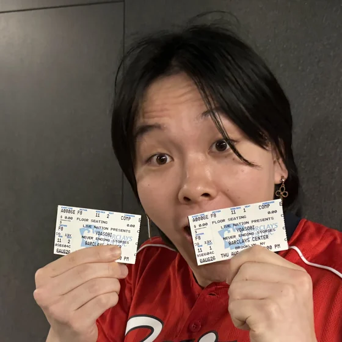

Everything I've built, in the order I built it. Click a waypoint to see it in action.
Everything I've built, in the order I built it. Click a waypoint to see it in action.

I'm currently in my fourth year as a BS/MS Biomedical Engineering / Computer Science student at Georgia Tech. I'm super invested in machine learning and building data pipelines at work, but I also love making silly, fun projects about games, memes and anime on the side. Most of them end up on my YouTube channel.
Built an MCP-backed agent that routes scientists' questions to the right Databricks Genie space and runs the SQL against live data. Used by 50+ scientists.
Built a Kafka and FastAPI pipeline that segments 2GB+ slide images in under 5 minutes each, and U-Net models that automate kidney tissue annotation.
Co-manage the largest student-run makerspace in the US and train students on waterjet, laser cutting, 3D printing and machining.
Hooked a real-time flow cytometer up to a Chi.Bio bioreactor for continuous monitoring of a cell culture.
Designed and prototyped an Arduino-controlled stair-climbing mechanism for cleaning robots.